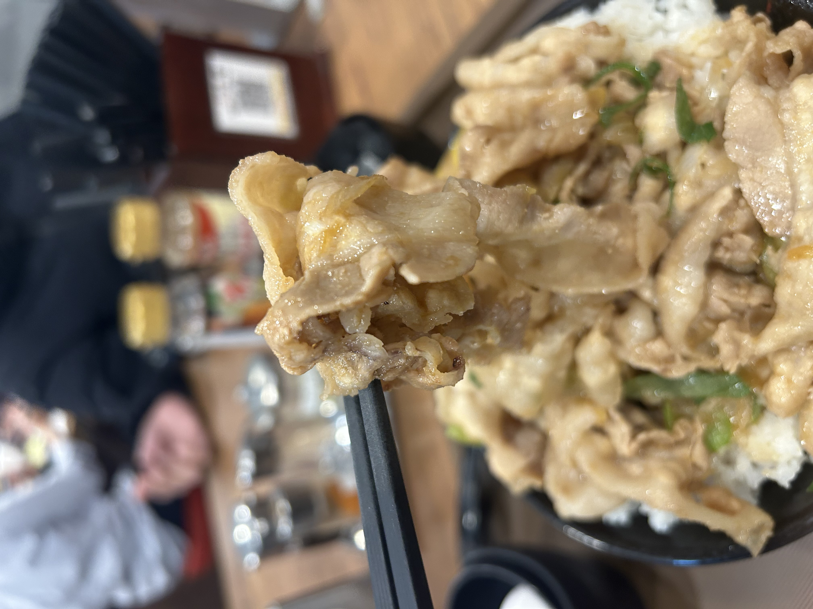
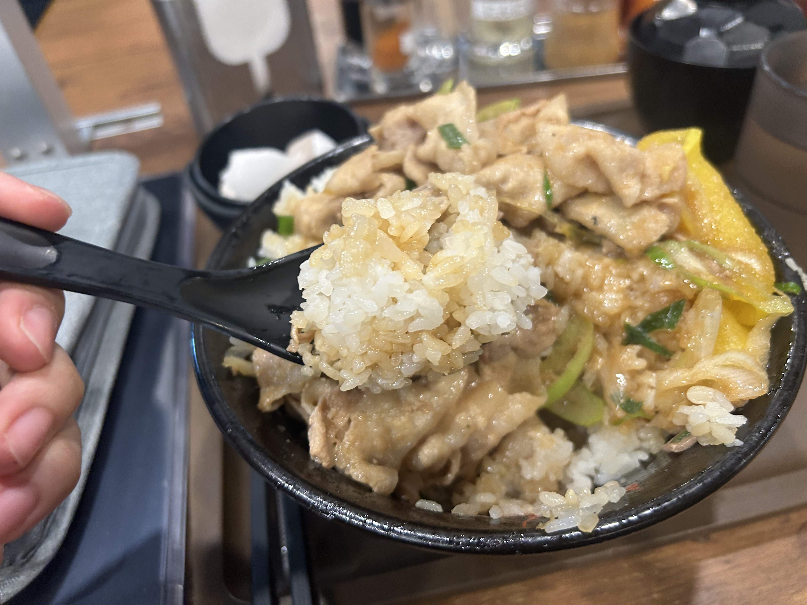
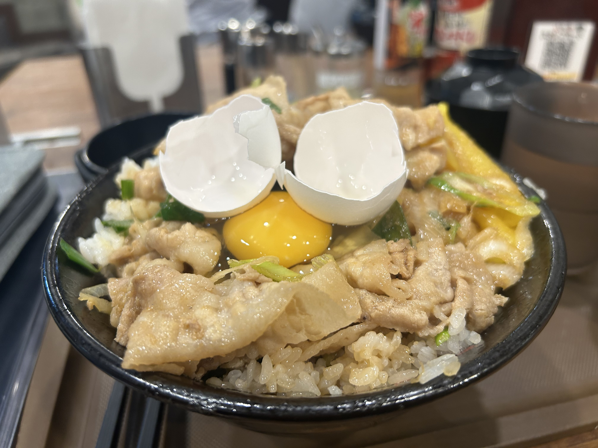
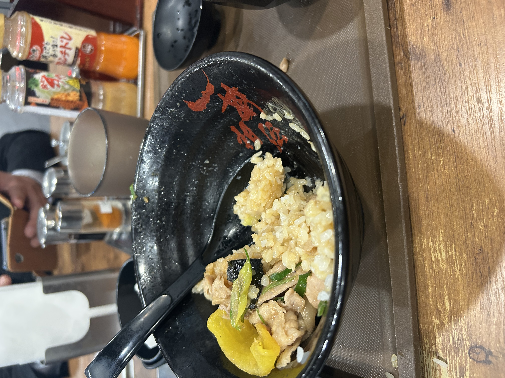
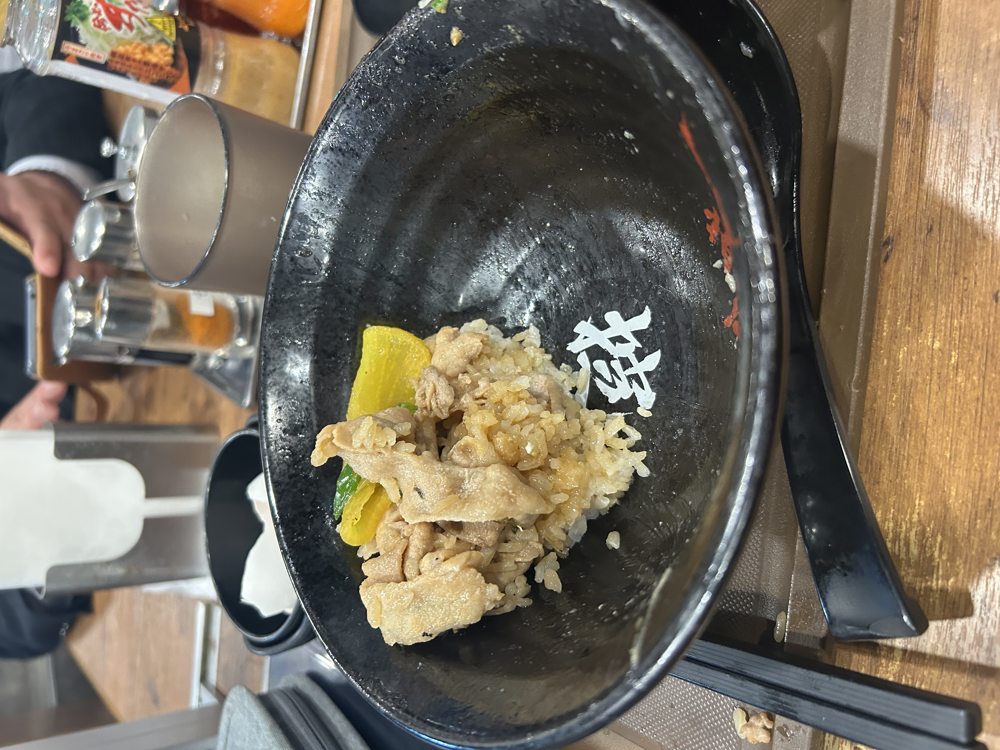
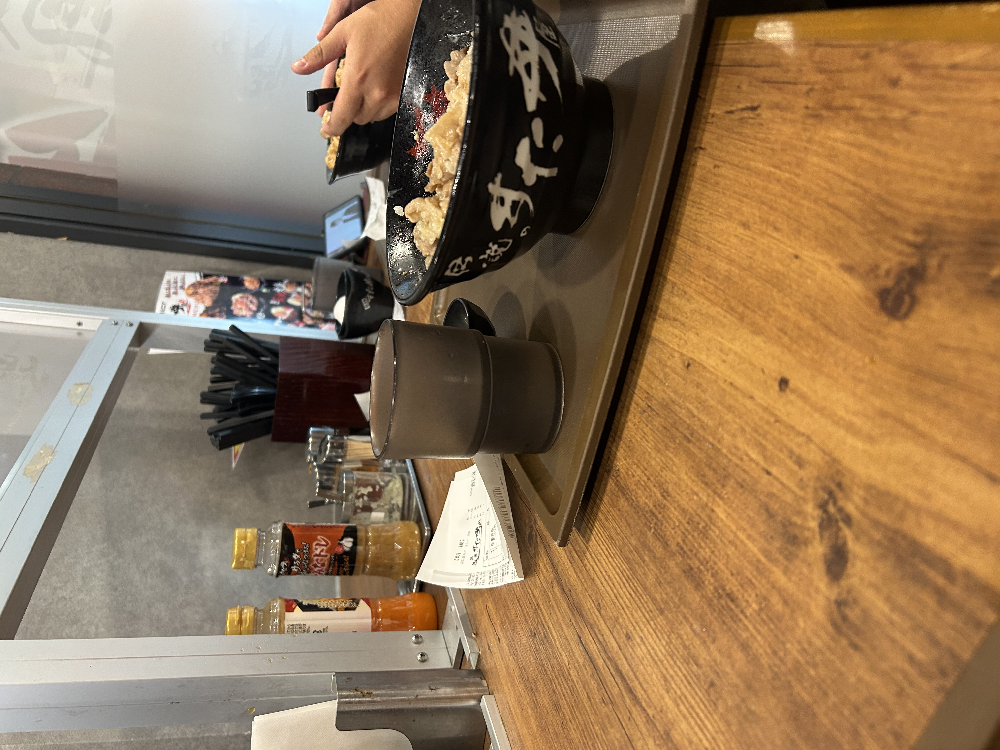
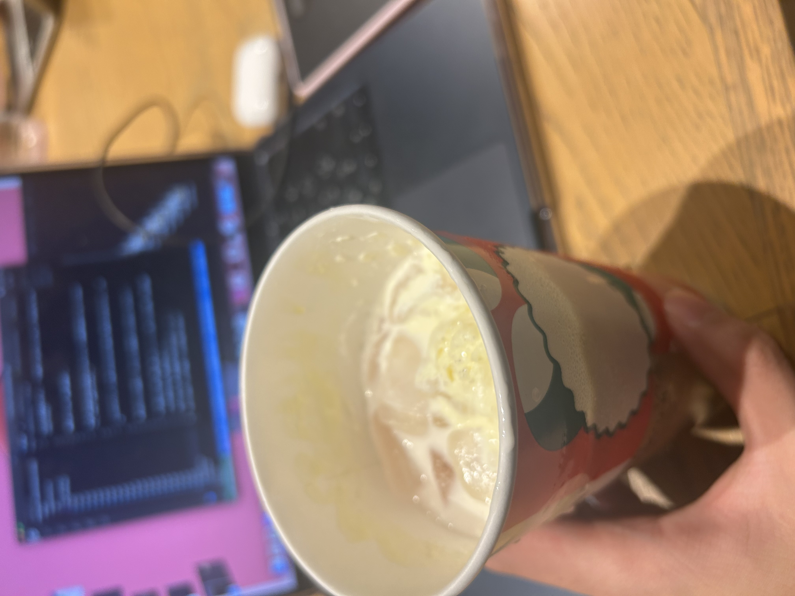

すた丼鬼盛りの肉増しがえぐすぎた!
ジャンル: Blog 記事作成日: 2024/11/29 タグ: 無料、すた丼、いい肉の日、肉増し
今日は１１月２９日、いい肉の日です！というわけで友達がスタミナ丼を食べに行きたいということで、すた丼へやってきました！

まずは選ぶところから...と言いつつ、もう決まっております。

そう、今回はガツンと食ってやろうと、鬼盛りを選びました！！
この肉のボリューム、これはすた丼の鬼盛り丼にプラスで、肉増しトッピングをしています...！すげえなと思いつつ、いただきます！

このお肉、いいですよね...

順調に食べ進めて...
ここら辺で卵を入れようかなと思い、卵を割りました。そしたら、見事に...

どんぶりに卵が着地しました...＾＾でも美味しそうなのでよしとしましょう!(本当は良くないかもしれないですけど)

順調に食べている中、お腹に違和感が...。
実は僕、話は逸れるのですが先週コロナにかかっていて、その影響か胃袋が小さくなっているみたいで...。やばい、正直もうダメかも...。

ここら辺でギブアップ...もう僕この小さな３口分にも満たない量を食べきれませんでした...。ですが、

隣に実はマジで２人友達がいて、その２人にこの少量を食べていただきました！ありがとう！！
そして僕はスタバへ直行。友達も「奢ってよ〜〜〜〜〜〜」と言っていたので同伴。その時に友達が
「いや〜味が足りんのよな。脂が足りねぇ！！」
と言っていました。僕、今味が濃すぎて死にそうなんだ...(´；ω；｀)
なんてことがあり、スタバで休憩して、ブログを今書いております。

もう到着して1時間経つのですが、新作の「メリーベリーストロベリー ミルク」を飲んでます！姉がおすすめしていたので買ったのですが、うまいこれ！おすすめです。
１２月中旬まで販売しているので、お早めに買いに行きましょう！あ、その前に、すた丼、食べような？＾＾